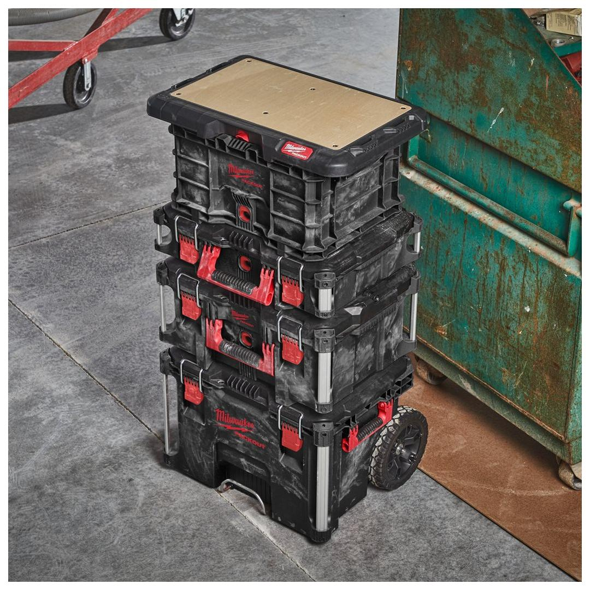
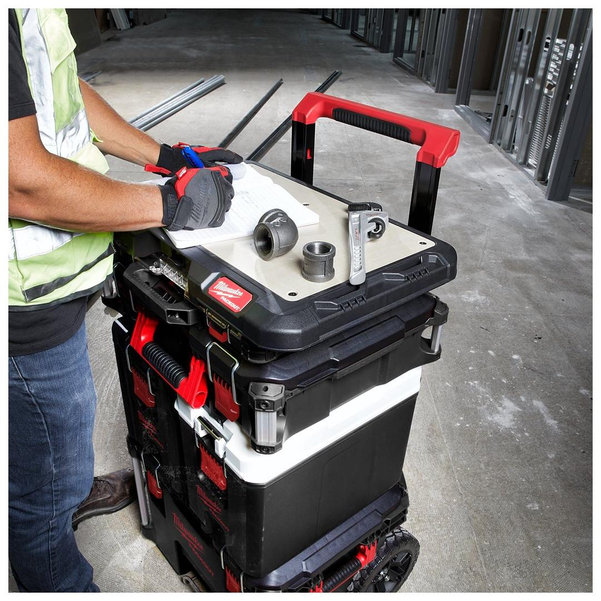
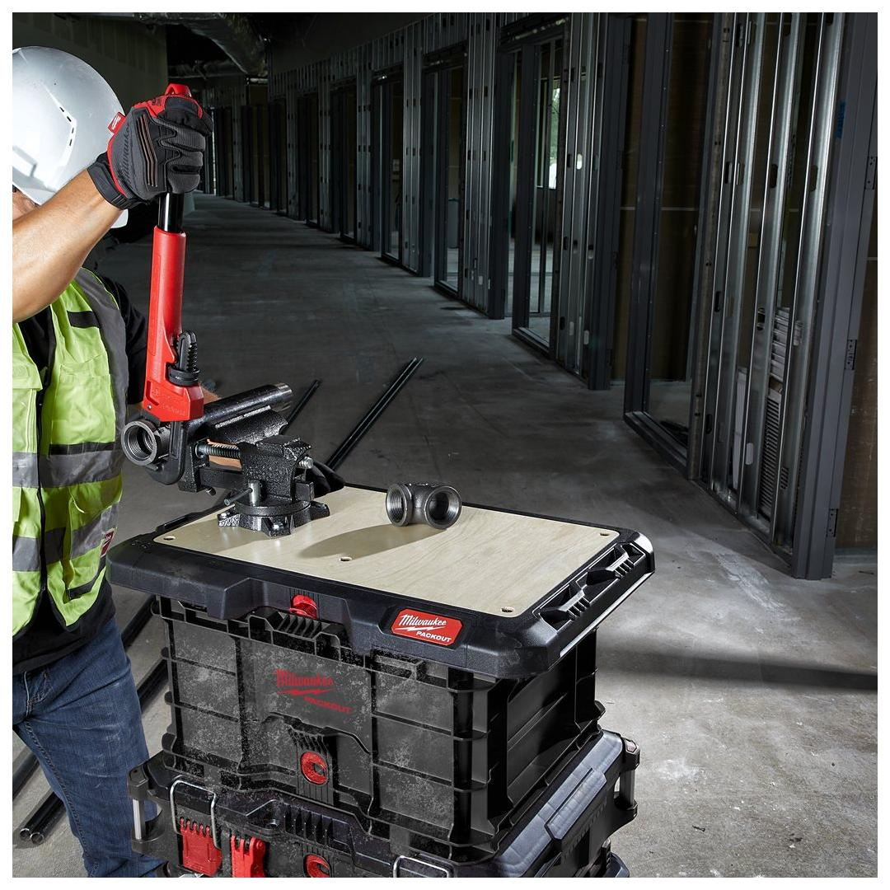
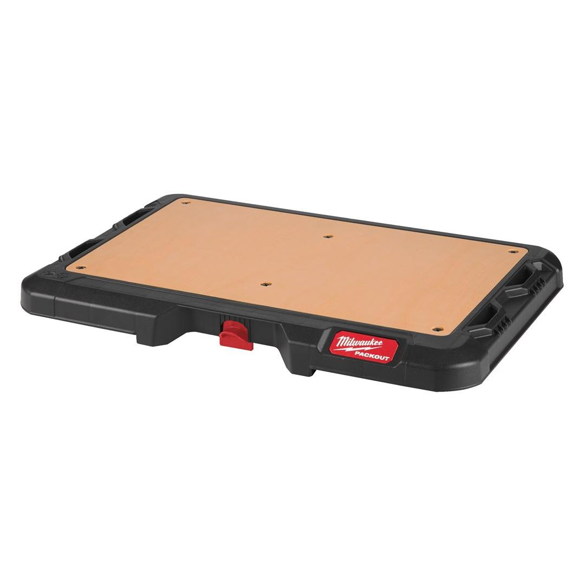
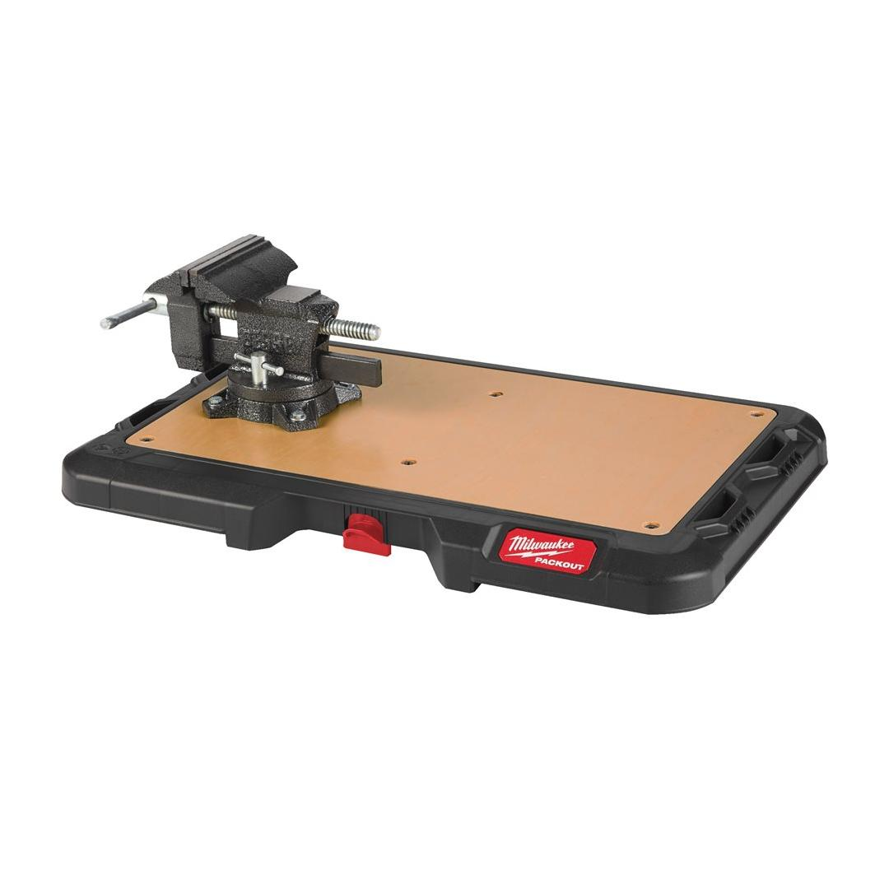
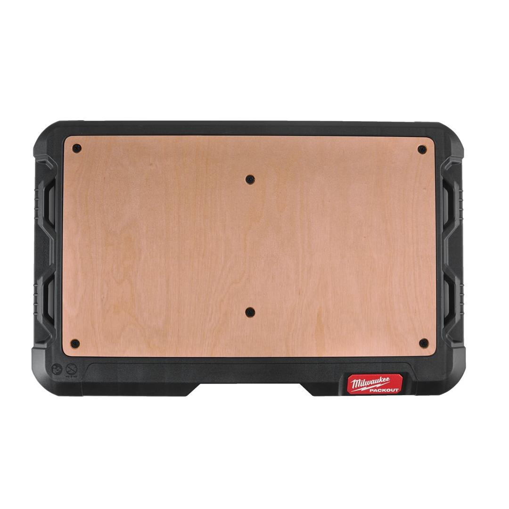
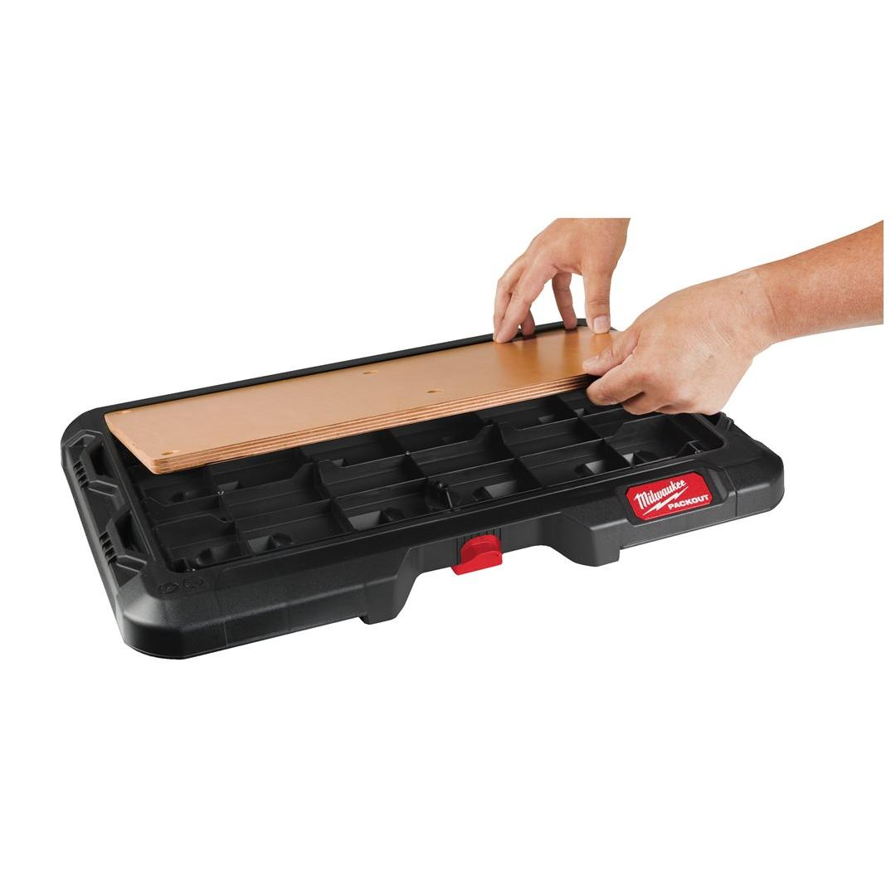
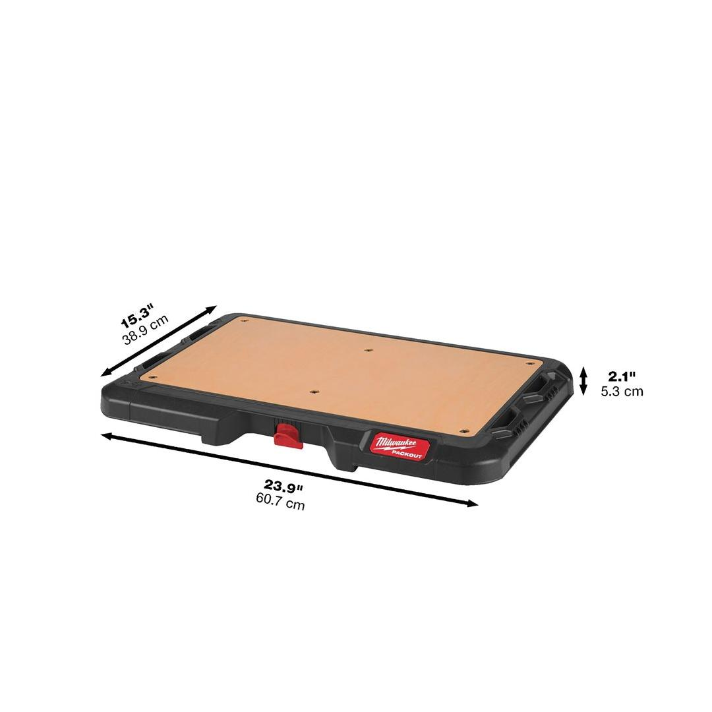

Milwaukee | Packout Customisable Work Surface 1pc
4932472128









Features
- Marine grade plywood top provides smooth surface for light assembly work, writing, sketching or working on a laptop.
- Fastener-ready surface allows for easy mounting of common jobsite materials and larger tools on top of a PACKOUT™ stack.
- 22 kg weight capacity.
- Part of the PACKOUT™ modular storage system.
- Constructed with impact resistant polymers for jobsite durability.
Information
| Dimensions (mm) | 53 x 607 x 389 |
| Pack quantity | 1 |